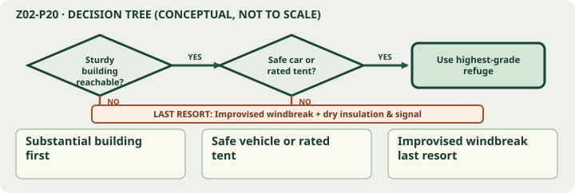

Z02-P20 · Shelter and housing · Adapted historical material
Choose between existing buildings, vehicles, tents and improvised cover
Prioritize proven engineered structures over fragile fabric tents or risky improvised builds during developing hazards.
When it applies · Any outdoor or travel disruption where multiple shelter options might be safely reachable.
Equipment · Local map, weather alerts and realistic assessment of travel distance and visibility.

Actions
- Prefer a safely accessible substantial building first, or a safely parked enclosed hard-topped vehicle for lightning and winter storms when no building is reachable.[E07, E14, E24]
- Use a purpose-made tent or tarp in its rated weather range only when safely sited clear of flood, lightning, tornado and hazard-tree risks.[E03, E20, E07, E17]
- Treat improvised natural windbreaks as a last-resort exposure measure when no manufactured shelter or safe refuge exists—never as an equivalent substitute for rated shelter.[E05, E09, ED]
Failure recognition · Spending hours building a shaky branch hut while a trailhead vehicle or ranger shelter sits safely twenty minutes back along a verified road.[E14, E05, ED]
Verify · Name the highest-grade shelter reachable via a verified safe route before committing effort to building or pitching cover.[E24, E14, ED]
Stop or change course · Never leave a safe building or stranded winter vehicle into blinding visibility or severe storm hazards just to try a different shelter.[E14, E17, E25]
Evidence and editorial notes
- E03 · NPS · Finding and Setting Up a Campsite (current web edition)
- Section: Finding a campsite · Conditions: Legal established or designated campsite
Support: Choose a durable legal site suited to the conditions. Campsite rules and physical risks vary by park.
Limitations: Established sites can still develop new hazard trees or flood risk after storms. · Conflicting evidence: None; requires live site inspection even at designated pads.
Editorial note: First gate of shelter site selection. · Specialist reviewer: Land management and wilderness shelter
Primary source · checked 2026-11-24 - E05 · NWS · What To Do If You're Caught in a Winter Storm (current web edition)
- Section: Outside and find shelter · Conditions: Cold, wet or windy winter conditions
Support: Block wind, stay dry and keep off cold ground. Keep exposure reduction separate from making a fire.
Limitations: Improvised windbreaks do not provide rated thermal protection or snow-load capacity. · Conflicting evidence: None; aligns with CDC-H.
Editorial note: Separates wind, ground, and moisture heat-loss pathways. · Specialist reviewer: Cold-weather shelter specialist
Primary source · checked 2026-11-24 - E07 · NWS · Lightning Tips (current web edition)
- Section: If you hear thunder; when it is safe to return · Conditions: Thunderstorm and reachable substantial building or enclosed hard-topped vehicle
Support: Move to proper shelter at thunder. Wait 30 minutes after last thunder before resuming outdoor activity.
Limitations: Fabric tents, open pavilions, and trees are not lightning-safe shelters. · Conflicting evidence: None; 30-minute rule is standard NWS guidance.
Editorial note: Separates weather cover from lightning protection in Z02. · Specialist reviewer: Weather safety and emergency management
Primary source · checked 2026-11-24 - E09 · NPS · Ten Essentials (current web edition)
- Section: Insulation; Emergency Shelter · Conditions: Weather, terrain and expected overnight risk
Support: Extra clothing and usable emergency shelter belong in the route-specific kit.
Limitations: Emergency bivies and space blankets trap condensation and tear easily if misused. · Conflicting evidence: None; requires inspecting and practicing shelter deployment.
Editorial note: Supports overnight emergency shelter readiness. · Specialist reviewer: Cold-weather shelter and field education
Primary source · checked 2026-11-24 - E14 · NWS · What To Do If You're Caught in a Winter Storm (current web edition)
- Section: In vehicles during a winter storm · Conditions: Vehicle stranded in winter weather with no immediate vehicle hazard
Support: Stay with the vehicle if a safe nearby destination is not obvious. Make the vehicle visible and notify others when possible.
Limitations: Snow-blocked exhaust pipes create rapid lethal CO hazards if an engine is run. · Conflicting evidence: None; keeps shelter decision distinct from idling engine advice.
Editorial note: Used for stranded-vehicle shelter and exhaust-hazard checks. · Specialist reviewer: Winter response and carbon monoxide safety
Primary source · checked 2026-11-24 - E17 · NWS · Tornado Safety (current web edition)
- Section: Tornado Safety > Staying Safe During a Tornado · Conditions: Tornado warning in camp, vehicle, or building
Support: Move to an interior lower-level room of a sturdy building if reachable; tents, mobile structures, and highway overpasses are unsafe; if caught outdoors with no sturdy shelter, monitor alerts early and follow NWS last-resort guidance.
Limitations: No outdoor improvised shelter is tornado-safe. · Conflicting evidence: None; reinforces early forecast withdrawal before severe storms arrive.
Editorial note: Establishes severe-storm abandonment threshold for camp shelters. · Specialist reviewer: Emergency management and meteorology
Primary source · checked 2026-11-24 - E20 · NPS · Camping: What to Bring (current web edition)
- Section: Camping: What to Bring > Shelter and Sleep System · Conditions: Overnight camping across three-season and cool conditions
Support: Match tent/tarp, groundsheet, sleeping pad, and sleeping bag ratings to expected night lows and precipitation; test pitching and inspect poles, zippers, and stakes before departure.
Limitations: Manufacturer comfort ratings assume dry insulation, ground pad use, and adequate caloric intake. · Conflicting evidence: None; reinforces pre-trip inspection and dry-sleep separation.
Editorial note: Anchors manufactured shelter selection, groundsheet fit, and gear readiness. · Specialist reviewer: Shelter equipment and field education
Primary source · checked 2026-11-24 - E24 · FEMA / Ready.gov · Shelter (current web edition)
- Section: Shelter > Sheltering in Place and Emergency Shelter · Conditions: Hazardous weather, outdoor smoke, or chemical/utility emergencies
Support: Choose shelter type to match the specific hazard: lowest interior room for wind/tornado, sealed interior room for outdoor hazardous-material alerts, or high ground for flood.
Limitations: Sealing a room for short-term chemical alerts requires following official duration orders to avoid CO/air-quality hazards. · Conflicting evidence: None; links household and outdoor shelter decision logic.
Editorial note: Bridges Z02 shelter selection with emergency-management hazard classes. · Specialist reviewer: Emergency management and shelter safety
Primary source · checked 2026-11-24 - E25 · FEMA / Ready.gov · Winter Weather (current web edition)
- Section: Winter Weather > Stay Safe During Winter Storms · Conditions: Extreme cold, drifting snow, and power or travel disruption
Support: Prepare layered clothing, emergency shelter/heat alternatives, and vehicle winter kits; stay indoors during blizzards, protect against frostbite/hypothermia, and keep exhaust vents and exits clear of drifting snow.
Limitations: Drifting snow can block tent vents, doors, and vehicle tailpipes silently overnight. · Conflicting evidence: None; reinforces overnight exit/vent clearance checks.
Editorial note: Supports snow-drift exit maintenance and winter shelter failure recognition. · Specialist reviewer: Cold-weather shelter and emergency management
Primary source · checked 2026-11-24
Source lineage · Ready.gov shelter, NWS winter and B012 P02; new manuscript · Classification · Adapted historical material.